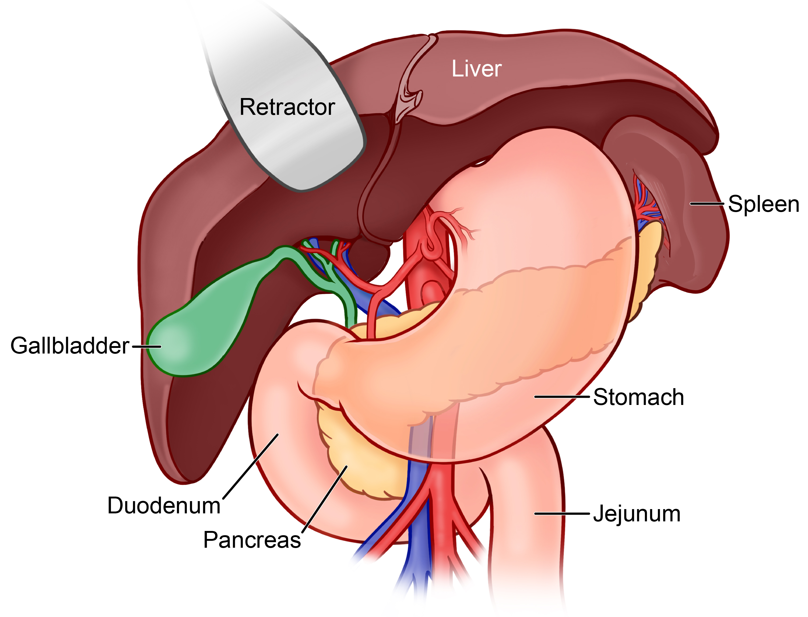
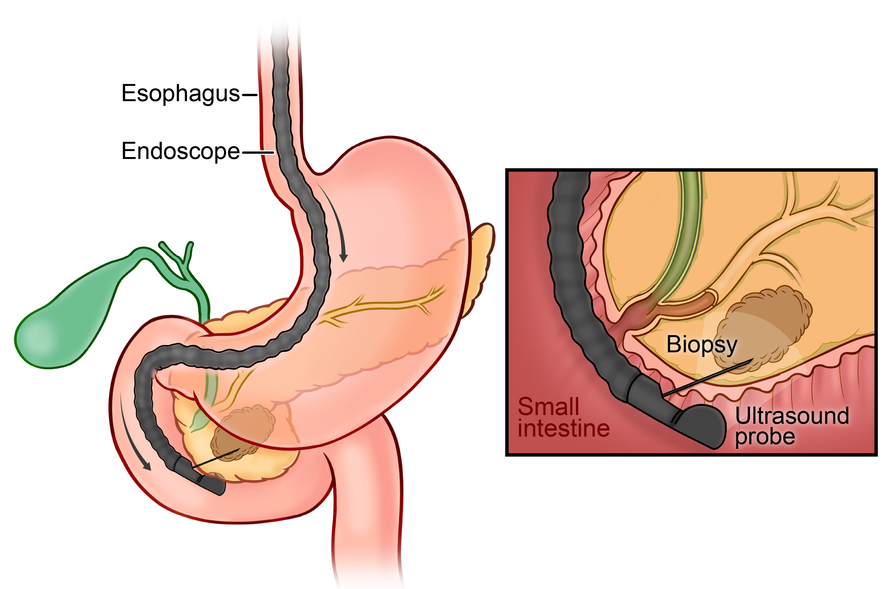
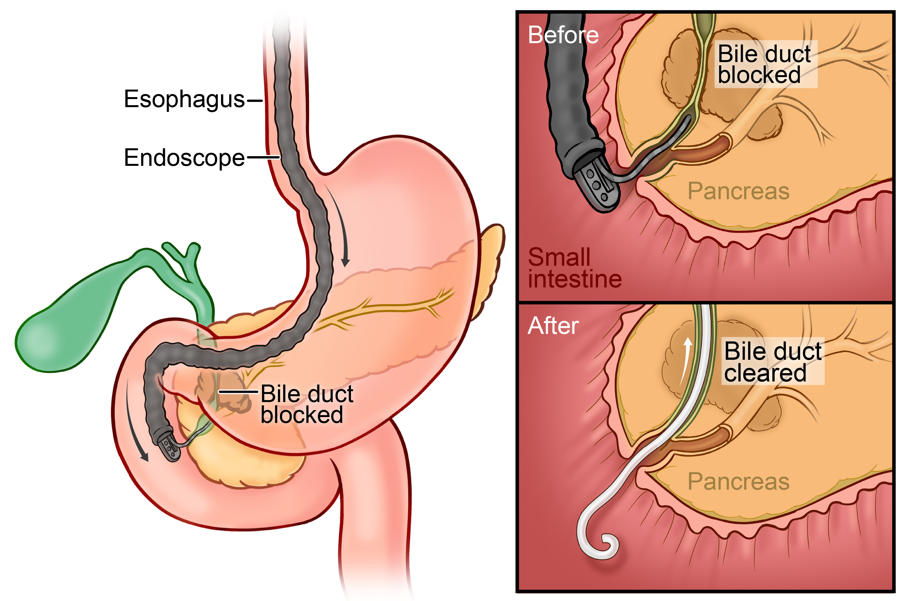
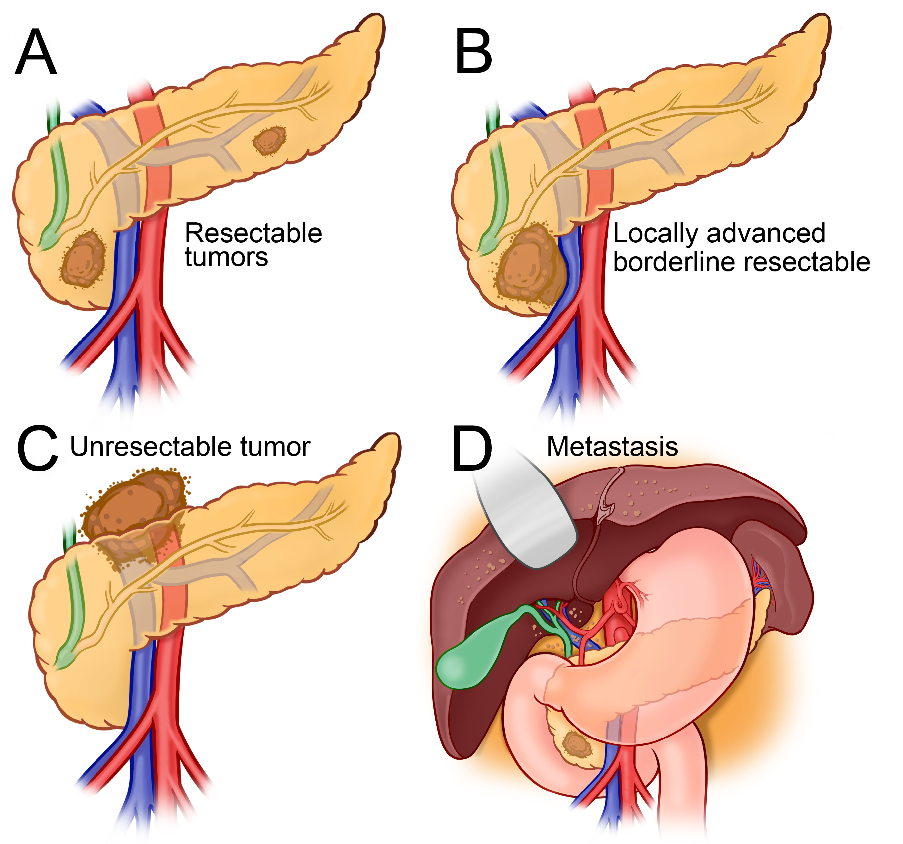

Conditions
Pancreatic Cancer
A comprehensive guide to understanding pancreatic cancer — from diagnosis and staging through treatment, surgery, recovery, and support.
Overview
What Is Pancreatic Cancer?
Pancreatic cancer is an abnormal, disorganized growth of cells that lose their normal function and replicate rapidly. It can invade neighboring organs and spread to other areas of the body. The most common type is adenocarcinoma; adenosquamous carcinoma and neuroendocrine tumors (PNET) are less common variants.
Potential Symptoms
- Painless jaundice (yellowing of skin or eyes)
- Pain in the abdomen and/or back
- Significant unexplained weight loss
- New-onset or worsening diabetes
- Low appetite, indigestion, or nausea
- Clay-colored, oily, or foul-smelling stools
Risk Factors
- Chronic or hereditary pancreatitis
- Family history of pancreatic cancer
- Smoking
- Long-standing diabetes
- Inherited gene mutations (BRCA1/2, PALB2, ATM, Lynch syndrome)
- Obesity and sedentary lifestyle
Pancreatic cancer is treated by a team of specialists — surgeons, medical oncologists, radiation oncologists, gastroenterologists, radiologists, pathologists, geneticists, social workers, and nutritionists. Consulting a high-volume specialist center leads to better outcomes.
Understanding the Pancreas
The pancreas is an organ located in the upper abdomen behind the stomach and colon, next to the spleen. It has two main jobs: regulating blood sugar through hormones like insulin, and producing digestive enzymes that break down fat, protein, and sugars. Anatomically it is divided into the head, neck, body, tail, and uncinate process, and is in close proximity to several major blood vessels supplying the liver, spleen, and intestines.

Pancreatic Exocrine Insufficiency
When the pancreas cannot produce enough digestive enzymes — or enzymes are blocked from reaching the small intestine — the body cannot adequately digest food. This is called pancreatic exocrine insufficiency. Common symptoms include frequent or loose stools, pale or oily stools, bloating, cramping, and unintentional weight loss. Your doctor may prescribe pancreatic enzyme replacement therapy (PERT) capsules taken with meals.
Pancreatic Cancer and Blood Sugar
The pancreas produces insulin to lower blood sugar after meals. When cancer or surgery impairs insulin production, blood sugar can rise and diabetes may develop. Regular blood sugar monitoring is an important part of care both before and after pancreatic surgery.
Diagnosis
How Pancreatic Cancer Is Diagnosed
Several tests are used to confirm the diagnosis, determine how advanced the cancer is, and guide treatment decisions.
Imaging
The primary tool for evaluating pancreatic cancer. Determines tumor size and location, vascular involvement, and whether the cancer can be surgically removed. Takes about 15 minutes with IV contrast.
Uses magnets, not radiation. Particularly useful for evaluating the bile ducts, liver lesions, and cases where CT findings are unclear. Takes about one hour.
Shows how cells use energy — cancer cells use more and appear as bright spots. Used when CT or MRI results are unclear. Requires fasting; the process takes 2–3 hours total.
Tumor Markers
CA 19-9 is the primary blood test used to monitor pancreatic cancer — levels typically rise when cancer grows and fall when treatment is working. It is not diagnostic on its own. CEA is a secondary marker used alongside CA 19-9, particularly in patients who do not produce CA 19-9.
Biopsy & Procedures
A thin flexible scope is passed through the mouth to image the pancreas up close and take a tissue sample with a fine needle. The sample is examined by a pathologist to confirm cancer type. Outpatient procedure; same-day discharge.

Used when a tumor blocks the bile duct, causing jaundice. A small stent is placed to restore bile flow. Often done in the same session as EUS — the EUS confirms the tumor and takes a biopsy while ERCP relieves the obstruction.

Important
A biopsy is required before starting chemotherapy or radiation. Patients going directly to surgery generally do not need one beforehand. Your team will determine the right sequence.
Staging
How Is Pancreatic Cancer Staged?
The most important initial question in staging is whether the cancer has spread to other organs or the lining of the abdomen (peritoneum). If distant spread is present, treatment focuses on systemic therapy. If it has not spread — stages I through III — patients may be candidates for a combination of systemic and local therapies, including surgery.
Note
In select situations, patients with limited metastatic disease who show a favorable response to chemotherapy may be considered for resection. This approach is generally offered as part of a clinical trial and is not standard practice.
CT, MRI, and PET scans determine the size and location of the tumor, whether it has grown into nearby blood vessels or organs, and whether it has spread to distant sites.
A short minimally invasive procedure where the surgeon looks directly at the liver and abdominal cavity for small deposits of cancer that may not appear on imaging. If hidden spread is found, major surgery is avoided and treatment is redirected to systemic therapy. Even when no visible disease is seen, fluid samples are taken from the abdomen to rule out microscopic peritoneal spread.
Resectability
Resectable
No involvement of major arteries or veins. Surgery may be performed upfront or after neoadjuvant chemotherapy, depending on tumor biology and multidisciplinary team assessment.
Borderline Resectable
The tumor abuts but does not encase major blood vessels. Neoadjuvant chemotherapy is given first to improve the chance of a complete resection.
Locally Advanced
Complex vascular involvement that cannot be safely reconstructed precludes resection. Treatment is systemic chemotherapy, with radiation in selected cases. Patients who demonstrate a favorable response and tumor biology may later be considered for surgery at specialized centers.

Clinical staging is based on imaging and pre-surgical exams. Pathological staging — based on what is seen under the microscope after surgery — can differ and provides more precise information. Accurate staging is essential because it determines the most effective sequence of surgery, chemotherapy, and radiation.
Genetics
Genetic Considerations
About 1 in 10 cases of pancreatic cancer are inherited — passed down through families due to changes in DNA. Knowing your family history can help you understand your risks and take steps to protect your health.
What Is Genetic Testing?
Genetic testing looks at your DNA to find inherited changes that might raise your risk of pancreatic and other cancers. A simple blood or saliva test can help doctors find these changes and inform a plan for early detection and prevention. Genetic testing can also determine whether specific targeted therapies would be beneficial in patients with metastatic pancreatic cancer.
Who Should Be Tested?
It is strongly recommended that all patients with pancreatic cancer undergo genetic testing — both germline (inherited) and somatic (tumor) testing. A genetic counselor will guide you through the process and help you understand the results.
High-Risk Individuals
Screening & Surveillance
People with an elevated risk of pancreatic cancer may benefit from structured surveillance. Screening programs use annual MRI or endoscopic ultrasound (EUS) to detect early-stage tumors or precancerous lesions when they are most treatable.
Mount Sinai offers a dedicated high-risk pancreatic cancer surveillance program for eligible individuals. Enrollment is also available through an ongoing registry study.
Treatment
Chemotherapy
Chemotherapy uses medicines that travel through the bloodstream to prevent cancer cells from growing and spreading. It can be given before surgery (neoadjuvant), after surgery (adjuvant), or as the primary treatment when surgery is not an option.
Chemotherapy drugs can be given intravenously (through a vein) or by mouth, usually as outpatient treatment. The most commonly used agents in pancreatic cancer are fluorouracil (5-FU) and gemcitabine. The two most common combination regimens are FOLFIRINOX and Gem-Abraxane (gemcitabine/nab-paclitaxel).
Chemotherapy may be given alone or in combination with surgery, targeted therapy, immunotherapy, and/or radiation. Genetic testing results can influence which chemotherapy regimen is most appropriate.
Mediport (Port-a-Cath)
Because many chemotherapy treatments are given through an IV, doctors often place a small device called a mediport under the skin of the chest. It connects to a thin tube leading to a large vein, allowing nurses to give chemotherapy and draw blood without repeated needle sticks. The port is placed during a short outpatient procedure with light sedation, and can stay in place for as long as chemotherapy is needed. It must be flushed regularly to keep it working properly.
Treatment
Immunotherapy
Immunotherapy helps the body's own immune system recognize and attack cancer cells. While immunotherapy has shown success in several other cancers, its benefit in pancreatic cancer has so far been limited — most pancreatic tumors do not respond well to immunotherapy alone.
An important exception is patients whose tumors have a specific genetic feature called MSI-H (microsatellite instability-high) or dMMR (mismatch repair deficiency) — these tumors can respond well to immunotherapy. This is one reason genetic testing of the tumor is recommended for all patients. Clinical trials are actively testing new approaches combining immunotherapy with chemotherapy, radiation, or targeted drugs.
Treatment
Radiation Therapy
Radiation therapy uses high-energy X-rays to kill cancer cells and stop them from growing, targeted at a specific area of the body. Your doctor will determine whether radiation is appropriate as part of your treatment plan.
Why Radiation Is Used
Radiation may be used before surgery to shrink a tumor, after surgery to destroy remaining cancer cells, to treat locally advanced tumors near critical blood vessels, or to relieve pain and other symptoms when surgery is not possible.
What to Expect
Your radiation oncologist reviews your case, answers questions, and performs a physical exam.
A planning CT maps the tumor and nearby organs so you are positioned precisely the same way for every session.
The team designs your personalized treatment plan. This typically takes 1–2 weeks.
Each session takes about 30 minutes (10 minutes of actual radiation). You lie still — you will not see, feel, or hear the radiation.
Common Side Effects
Fatigue, nausea, decreased appetite, loose stools, skin irritation in the treated area, and weight loss. Rare effects include intestinal damage or bile duct strictures. Your care team monitors throughout treatment.
Treatment
Surgery
Surgery combined with systemic treatment offers the best chance of cure for patients with pancreatic cancer. The goal is complete removal of the tumor with negative margins.
Who Is Eligible?
Surgery is considered for patients who are generally fit for major surgery and do not have metastatic (distant) disease. The first step is assessing resectability — whether the tumor can be completely removed without injury to critical structures.
Types of Surgery
► Pancreaticoduodenectomy (Whipple Procedure)
For tumors in the head of the pancreas. The head of the pancreas, duodenum, gallbladder, a portion of the bile duct, and part of the stomach are removed. The remaining organs are reconnected to restore digestive function. Operative time is typically 4–7 hours.
Full procedure details →► Distal Pancreatectomy
For tumors in the body or tail. The body and tail of the pancreas, along with the spleen, are removed. Minimally invasive approaches are used when feasible, with generally shorter recovery than the Whipple.
Full procedure details →► Total Pancreatectomy
Performed when the tumor affects the entire pancreas or critical vessels cannot be preserved. Patients will need lifelong insulin therapy and pancreatic enzyme replacement after this operation.
Full procedure details →Surgical Approaches
The traditional approach. A single incision in the abdomen gives the surgeon direct access to the pancreas and surrounding structures.
Small incisions with a camera and specialized tools allow removal of the tumor without a large incision.
A specialized laparoscopic approach using a robotic system that provides a 3D view and allows the surgeon to operate with greater precision and stability.
After Surgery
Recovery
In the Hospital
Right after surgery, patients are monitored closely in a hospital room (sometimes briefly in the ICU). Patients are encouraged to get up and start moving the day after surgery, gradually increasing activity each day. Most people can go home once bowel function returns — typically 7–10 days after surgery for a Whipple.
At Home
Full recovery takes about 2 months. Recovery speed depends on overall health before surgery, the type of surgery, and whether any complications arise. During follow-up visits, the care team monitors the incision, diet, bowel function, and pain. Imaging may be done to check healing and ensure the cancer has not returned.
Adjuvant Chemotherapy
Chemotherapy after surgery (adjuvant chemotherapy) is typically recommended to reduce the risk of recurrence. It usually begins 4–8 weeks after surgery, once recovery is complete.
Potential Complications
Research
Clinical Trials
Clinical trials are research studies that investigate new treatments or new combinations of treatments. In the fight against pancreatic cancer, clinical trials provide early access to innovative therapies designed to improve effectiveness and minimize side effects — benefiting current participants and future patients while advancing research.
Clinical trial eligibility varies widely by stage and tumor type. If you are interested in exploring available trials, ask your doctor which trials you may be eligible for. Your care team at Mount Sinai has access to a wide variety of open trials.
Ask About Clinical TrialsSupportive Care
Nutrition
Good nutrition is important during cancer treatment. Eating the right foods helps you stay strong, tolerate treatment better, and maintain a healthy weight.
Why Nutrition Matters
For patients with pancreatic cancer, good nutrition helps prevent weight loss and malnutrition, maintain treatment doses and schedule, and manage side effects from both cancer and treatment.
Managing Weight Loss
Supportive Care
Social Work & Emotional Support
What Medical Social Workers Do
Medical social workers assess the emotional and social needs of patients and families, collaborate with the healthcare team on treatment plans, and provide counseling and resources to help cope with the effects of illness. They also help patients access community services such as financial assistance, transportation, lodging, and emotional support.
Coping Strategies
Healthy coping strategies lead to longer-lasting positive outcomes. What works varies from person to person — it's important to build a toolkit that works for you.
- Expressing emotions — Allowing yourself to feel and name your emotions increases resilience. "I feel…" statements are a powerful tool.
- Connecting with others — Loved ones, support groups, and counselors reduce stress and increase wellbeing.
- Setting boundaries — Communicating your needs and saying "no" preserves energy for what matters most.
- Relaxation techniques — Mindfulness and deep breathing slow the heart rate and reduce stress (e.g. Calm app).
- Faith & community — Spiritual practice and faith communities can provide meaning and comfort during difficult life events.
Advance Care Planning
An advance directive is a legal document that explains what kind of medical care you want if you are ever too sick or unable to speak for yourself. It helps your doctors and family know what to do.
Ask your social worker or care team to help you complete advance directives. It is an act of care for yourself and your loved ones.
Supportive Care
Palliative Care & Spiritual Support
What Is Palliative Care?
Palliative care focuses on comfort, quality of life, and your total well-being during and after cancer treatment. It is not only for end-of-life — it can and should begin at the time of diagnosis and accompany any active cancer treatment. It helps relieve symptoms and side effects and supports you and your family throughout the journey.
Always ask your healthcare team about palliative care services — they are available and they can help significantly with quality of life.
Spiritual Care
A cancer diagnosis can be overwhelming not only physically but emotionally and spiritually. Spiritual care supports your inner life, beliefs, and values regardless of your faith background. It may include prayer or meditation, talking with a chaplain or spiritual advisor, exploring questions of meaning and hope, or finding peace in music, nature, or personal rituals.
For Families
Caregiver Resources
Caring for a loved one with pancreatic cancer can be demanding emotionally and physically. You are not alone — significant support is available.
PanCAN
Pancreatic Cancer Action Network offers personalized support, educational materials, and caregiver support groups. Helpline: 877-272-6226 | pancan.org
CancerCare
Free counseling, online and telephone support groups, and educational workshops for patients and caregivers. cancercare.org
American Cancer Society
24/7 support helpline, information on treatment options, and caregiver guides. Helpline: 800-227-2345 | cancer.org
Lustgarten Foundation
Focuses on pancreatic cancer research and provides caregiver resources. lustgarten.org
CFAC — Financial Assistance
Cancer Financial Assistance Coalition helps with treatment costs, lodging, and transportation. cancerfac.org
National Cancer Institute
Offers educational materials and coping strategies for caregivers. cancer.gov
FAQ
Frequently Asked Questions
Get an Expert Evaluation
Resectability assessments vary between centers. If you or a family member has been diagnosed with pancreatic cancer — or told it is not operable — a second opinion is appropriate.